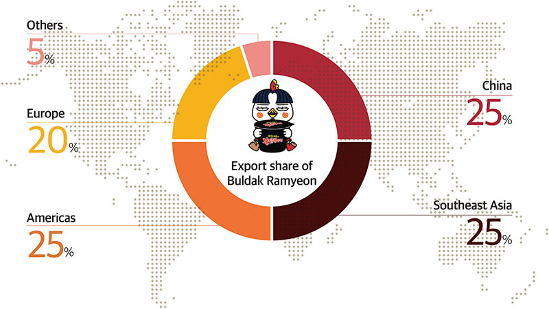

in Issue & Trend
World-Sensational Spicy,
Buldak Ramyeon
In 2012, the world saw an unprecedented level of spiciness. Initially dismissed as “too spicy for anyone to eat,” Buldak Ramyeon began to captivate the public with its addictive flavor, gaining traction through social media. Today, it stands as a global icon of extreme spiciness, drawing challengers from all over the world and expanding its influence in the domestic and international instant noodle markets.
By Hye-won Kim
A New “Red Flavor” Is Born
Korea’s first instant noodles, Samyang Ramyeon, were introduced in September 1963 by Samyang Round Square (formerly Samyang Food Group). Since then, a diverse array of instant noodles has emerged, from classic red broths and light white soups to jjajang (black bean), bibim (mixed), and udon styles. With over 500 varieties of instant noodles currently available in Korea, the Buldak Ramyeon series, with its unparalleled spiciness, has become one of the top five megahits in the 60year history of Korean instant noodles.
From its debut in 2012 to the first half of 2024, the Buldak brand has generated an accumulated revenue of KRW 4 trillion, selling a total of 7 billion units. Its export ratio is equally noteworthy. The brand is now available in over 100 countries, and its export share has risen steadily—from 50% of annual sales in 2019 to an alltime high of 77% in the first half of 2024. Beyond impressive domestic metrics, Buldak Ramyeon has achieved remarkable global success, contributing to more than half of Korea’s total instant noodle exports within a decade of its launch. How did this “Buldak phenomenon” ignite such a global craze?
Buldak Ramyeon traces its origins to an idea from Jung-soo Kim, Vice Chair of Samyang Foods and a member of the founding family. In 2011, when spicy food was trending in Korea, Kim was inspired by the sight of customers in Myeongdong delighting in fiery dishes. Determined to bring the bold flavors of Koreanstyle spiciness to instant noodles, she and her team embarked on an extensive culinary journey, visiting popular restaurants serving spicy dishes like buldak (fire chicken), bulgopchang (spicy grilled intestines), and dakbal (spicy chicken feet), while studying chili peppers from around the globe. After a year of intense research involving 1,200 chickens and two tons of seasoning, Buldak Ramyeon was born in April 2012.
worldwide
Over 100 countries
Cumulative sales volume of the Buldak brand
7 billion units
Cumulative revenue of the Buldak brand
KRW 4 trillion
A Viral Phenomenon Fueled by Word of Mouth
Thanks to its addictively spicy flavor, Buldak Ramyeon quickly cultivated a dedicated fanbase. Fans began sharing their own ways of enjoying the product, such as pairing it with string cheese, tuna mayo, or eggs to tone down the heat. Recipes spread across social media, further boosting its popularity. In response, Samyang released variations such as Buldak Ramyeon Carbonara, Buldak Ramyeon Cheese, Buldak Ramyeon Stew, and Buldak Ramyeon 3X Spicy, keeping the Buldak craze alive. Among these, Buldak Ramyeon Carbonara—a creamy twist on the original with powdered cream soup—received an explosive reception. Initially launched as a limited edition, its popularity led to a permanent release in May 2018, making it one of the flagship products of the Buldak brand.
What makes the Buldak phenomenon extraordinary is that it gained immense popularity without traditional advertising. While domestic consumers’ creative recipe experiments contributed to its fame, the global “Fire Noodle Challenge” that emerged in 2014 played a pivotal role. The trend, driven by international consumers, took over platforms like YouTube and TikTok. Recently, Buldak Ramyeon Carbonara sparked a supply shortage in the United States and was even featured in The New York Times. Celebrities like rapper Cardi B and TikTok food reviewer Keith Lee shared their enthusiasm, with Lee stating he drove 30 minutes just to buy it. Viral moments, such as a young girl named Adalynn Sofiaa receiving Buldak Ramyeon Carbonara as a birthday gift, garnered over 100 million views, further fueling the frenzy.
From Korean Staple to Global Entertainment
As Korea’s first instant noodle company, Samyang has cemented its global reputation by combining Korea’s spicy flavors with the culinary traditions of various countries. By creating locally tailored products that retain the core identity of the original Buldak Ramyeon, the brand has successfully introduced unique variations of spiciness. In 2014, Samyang obtained KMF halal certification, paving the way for Buldak products to gain acceptance in Southeast Asia, home to over 60% of the world’s Muslim population. By 2017, the company earned MUI halal certification in Indonesia, fully entering the halal food market. Catering to regional tastes and trends, Samyang launched Buldak Ramyeon Habanero Lime in the Americas, Buldak Ramyeon Tom Yum for Asian markets, and Buldak Ramyeon Yakisoba in Japan, all receiving widespread acclaim. Currently, the Buldak lineup at home and abroad includes 21 instant noodle varieties, six snack and readytoeat options, and six sauces.
Aligning with the global popularity of Korean cultural exports like K-pop and K-dramas, Samyang has undertaken innovative marketing campaigns to enhance the brand’s competitive edge. In August 2024, the company hosted a “Buldak Spicy Ferry Party” in Copenhagen to celebrate the retraction of a recall on its products in Denmark. Although certain Buldak products were initially recalled due to their high capsaicin levels, Samyang successfully proved their safety, marking their triumphant return with this festive event. The gathering attracted over 100 local consumers and widespread coverage from major media outlets like Reuters. Samyang’s recent global campaign, Splash Buldak, introduced Buldak sauces to consumers in cities like New York, Los Angeles, Shanghai, and London through tasting events. As part of the campaign, a massive fourweek advertisement was displayed in New York’s Times Square, captivating tourists from around the world.
Through collaboration with countless prosumers,1 Buldak Ramyeon has evolved from a simple food item to an entertaining challenge and a lifestyle product. Looking ahead, Samyang plans to strengthen the brand’s appeal with more interactive campaigns, ensuring Buldak continues to delight consumers worldwide.
- 1. The term prosumer is a combination of “producer” and “consumer,” introduced by American futurist Alvin Toffler in his book The Third Wave . It refers to a new type of customer whose roles as a producer and consumer merge.